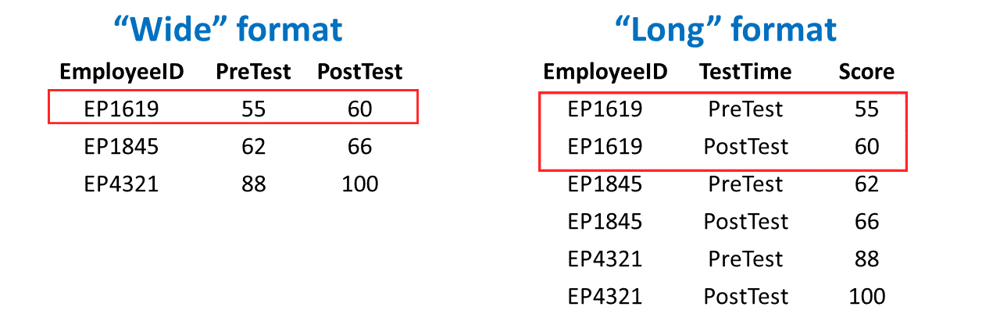

Chapter 4 Data Management
Data management refers to the process of wrangling, cleaning, manipulating, and structuring the data attained during the Data Acquisition phase of the HR Analytics Project Life Cycle. In many instances, the overarching goal of data management is to prepare the data for subsequent analysis during the Data Analysis phase. In general, you can expect to spend 80% of your time managing data and about 20% of your time analyzing data; however, upon reflection of my own personal experiences, I generally spend about 90% of my time managing data for a project and only 5% of my time actually analyzing the data. My point is that we shouldn’t underestimate how long the data manage process will take.
The Data Management phase of the Human Resource Analytics Project Life Cycle (HRAPLC) involves wrangling, cleaning, manipulating, and structuring the data gathered during the Data Acquisition phase.
Data analysts and database administrators manage data to complete tasks like:
- Defining the characteristics of the data (e.g., quantitative vs. qualitative; structured vs. unstructured);
- Organizing the data in a manner that promotes integration, data quality, and accessibility, particularly when data are longitudinal or multisource;
- Cleaning the data by addressing data-validation issues, missing data, and untrustworthy data or variables;
- Manipulating and joining (i.e., merging) data, and adding structure if needed;
- Maintaining the data security and privacy, including restricting access to only authorized individuals.
4.1 Data Cleaning
Data cleaning is an essential part of data management and is discussed in greater detail in the Data Cleaning chapter. Broadly speaking, when we clean data, we attempt to identify, correct, or remove problematic observations, scores, or variables. More specifically, data cleaning often entails (but is not limited to):
- Identifying and correcting data-entry errors and inconsistent coding;
- Evaluating missing data and determining how to handle them;
- Flagging and correcting out-of-bounds scores for variables;
- Addressing open-ended and/or “other” responses from employee surveys;
- Flagging and potentially removing untrustworthy variables.
By default, different spellings and cases (e.g., Beaverton, beverton, beaverton) for what is supposed to be the same category (e.g., Beaverton) will be treated as separate categories by many programs; therefore, it is important to clean the data by creating consistent category labels.
4.2 Data Manipulation & Structuring
Often, data require manipulation or (re)structuring prior to analysis or visualization. A common type of data manipulation is to pivot data from “wide” to “long” format or from “long to wide” format. When data are in wide format, each row contains all of the variable values for a single case (i.e., entity). For example, imagine a data table containing data related to each employee’s performance on the exact same tests administered at two points in time (e.g., pre-test, post-test) as well as their employee unique identifier number (e.g., employee ID). If this table is in wide format, then each employee’s data will be contained within a single row, such that their scores one each test belong to a separate variable (i.e., column, field). In contrast, when data are in long format, a single case’s data may be spread across multiple rows of data, where commonly each row belonging to a given case represents the a different observation for that case. Separation observations for a single case may have to do with the time (e.g., Time 1 vs. Time 2) or source (e.g., employee rating vs. supervisor rating) of measurement for common target. For example, the same imaginary data described above could be manipulated into long format, such that each employee would have up to two rows of data: one for each test (i.e., pre-test vs. post-test). Again, our decision regarding whether to manipulate data to wide or long format often has to do with what type of analysis or visualization we plan to apply to the data subsequently.
 As a prerequisite for applying many common types of analyses and visualizations, we need to apply structure to the data, which often means putting the data into rows and columns (e.g., table). Some data-acquisition tools (e.g., survey platforms) make this process relatively easy for us, as they typically export data in the form of a spreadsheet. Other data-acquisition tools (e.g., data scraping), however, will require that the data be structured prior to analysis. For example, imagine we wish to scrape data from employee emails (with their consent). In their raw form, the data contained within the typical email does not inherently fall within rows and columns, where columns represent variables and rows represent cases or observations.
When data are acquired, they don’t always arrive in a structure that is amenable for subsequent analysis or visualization. For example, the data from these four emails are not yet structured in neat rows and columns.
We might restructure the email data by creating separate variables, such as an email unique identifier number, sender, receiver, and subject line. Each row might then contain a single email’s data for those variables. By structuring the data into a table, we are now one step closer to applying perhaps some sort of text analysis or to construct a social network analysis.
Structure can be applied to the same unstructured email data shown in the previous figure by organizing the data into columns (e.g., variables, fields) and rows (e.g., cases) – or in other words, organizing the data into a table.
4.3 Common Data-Management Tools
A variety of tools can facilitate data management, including database management systems and information systems, data analysis software programs, and programming languages. Even widely available spreadsheet tools like Microsoft Excel and Google Sheets offer some data management capabilities. Enterprise database management systems and information system platforms often feature functions that enable joining and arranging data stored in tables. For example, Microsoft Access is perhaps one of the simplest relational database management tools, and it is not uncommon for instructors to teach beginners fundamental database management concepts using the program given its easy-to-understand graphic interface. Other examples of database management systems and vendors include MySQL, Microsoft SQL Server, SQLite, MongoDB, Oracle, and SAP. A number of common database management platforms can be accessed using Structured Query Language (SQL). Finally, programming languages like R and Python can be used to manage data.
4.4 Summary
In this chapter, we reviewed the Data Management phase of the HR Analytics Project Life Cycle, which included discussions of data cleaning, manipulating and structuring data, and common data-management tools.